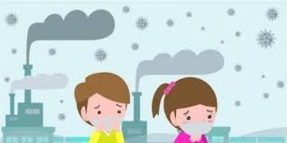

Las sustancias extranas que provocan la contaminacion atmosferica son agentes gaseosos, liquidos y solidos que se concentran en la atmosfera; sus potenciales
fuentes de origen son las siguientes:
Las sustancias extranas que provocan la contaminacion atmosferica son agentes gaseosos, liquidos y solidos que se concentran en la atmosfera; sus potenciales
fuentes de origen son las siguientes:
1) Procesos industriales: a pesar de las medidas preventivas constituyen uno de los principales focos contaminantes.
2) Combustiones domesticas e industriales: principalmente los combustibles solidos (carbon) que producen humos, polvo y dioxido de azufre.
3) Vehiculos de motor: su densidad en las regiones muy urbanizadas determina una elevada contaminacion atmosferica (oxidos de carbono, plomo, oxidos de nitrogeno,
particulas solidas). En Estados Unidos son los responsables de cerca de un 60% del peso total de los contaminantes emitidos a la atmosfera, y en Paris de un 47%
de la contaminacion atmosferica. La importancia de cada una de estas fuentes contaminantes es funcion de la concentracion de los agentes emitidos con intensidad
superior a la normal, y de las condiciones meteorologicas locales.
Se han clasificado mas de un centenar de sustancias contaminantes de la atmosfera. Las mas importantes son el dioxido de azufre, el dioxido de carbono, el monoxido
de carbono, los oxidos de nitrogeno, los compuestos organicos volatiles liberados tras una combustion incompleta de los hidrocarburos liquidos (COV), el plomo,
los fluoruros, etc.
El dioxido de azufre es uno de los contaminantes habituales mas representativos del aire de nuestras ciudades. Procede de la combustion de carbones o de aceites
minerales utilizados en la produccion de energia, en la industria y en la calefaccion domestica, los que pueden llegar a contener azufre en una proporcion de 5%.
Al ser quemados dichos combustibles, el azufre es liberado a la atmosfera en forma de dioxido de azufre o gas sulfuroso (SO2).
El principal peligro que presenta el dioxido de azufre son las reacciones quimicas, ya que en presencia de humedad ambiental puede transformarse en trioxido de
azufre (SO3), originando aerosoles de acido sulfurico (H2SO4), estos aerosoles son sumamente peligrosos en el fenomeno conocido con el nombre de "smog"
(termino proveniente del ingles: "smoke", humo, y "fog", niebla).

Humanos
La calidad del aire adverso puede matar a los organismos, incluyendo al hombre. La contaminacion con ozono puede producir enfermedades respiratorias, enfermedades
cardiovasculares, inflamaciones de garganta, dolor de pecho y congestion nasal. La contaminacion causa muchas enfermedades y estas dependen del contaminante que las
cause; generalmente son enfermedades de los ojos y del aparato respiratorio como la bronquitis, el asma y el enfisema pulmonar.
La contaminacion del agua causa aproximadamente 14 000 muertes por dia, la mayoria debido a la contaminacion de agua potable por aguas negras no tratadas en paises
en vias de desarrollo. Un estimado de 700 millones de hindues no tienen acceso a un sanitario adecuado, 1 000 ninos hindues mueren de enfermedades diarreicas todos
los dias.? Alrededor de 500 millones de chinos carecen de acceso al agua potable. 656 000 personas mueren prematuramente cada ano en China por la contaminacion
del aire. En India, la contaminacion del aire se cree causa 527 700 muertes cada ano.? Estudios han estimado en cerca de 50 000 muertes en Estados Unidos por
contaminacion del aire.
Los derrames de petroleo pueden causar irritacion de piel y eflorescencia. La contaminacion acustica induce sordera, hipertension arterial, estres, y trastorno del
sueno. El envenenamiento por mercurio ha sido asociado al trastornos del desarrollo en ninos y sintomas neurologicos. La gente mayor de edad esta mas expuesta a
enfermedades inducidas por la contaminacion del aire. Aquellos con trastornos cardiacos o pulmonares estan bajo mayor riesgo. Ninos y bebes tambien estan en serio
riesgo. El plomo y otros metales pesados se ha visto que generan problemas neurologicos. Las sustancias quimicas y la radiactividad pueden causar cancer y tambien
inducir mutaciones geneticas que provocan enfermedades congenitas.
Se ha probado recientemente que la contaminacion puede reducir la fertilidad tanto en hombres como mujeres. En hombres reduce la calidad del semen y puede producir
esterilidad. En las mujeres menores a 40 anos puede provocar una menopausia precoz debido a una reduccion radical de su reserva ovarica.
Ecosistemas
La contaminacion se ha encontrado presente ampliamente en el medio ambiente. Existe un amplio numero de efectos debido a esto:
Biomagnificacion: describe situaciones donde toxinas (como metales pesados o contaminantes organicos persistentes, etc.) pueden pasar a traves de niveles troficos,
convirtiendose exponencialmente en toxinas mas concentradas en los niveles troficos mas altos.
La emision de dioxido de carbono causa el calentamiento global por aumento en su concentracion en la atmosfera, y la acidificacion de los oceanos el
decrecimiento del pH de los oceanos de la Tierra debido a la disolucion de CO2 en el agua.
La emision de gases de efecto invernadero conduce al calentamiento global que afecta a ecosistemas en muchas maneras.
Especies invasoras pueden competir con especies nativas y reducir la biodiversidad. Plantas invasivas pueden contribuir con desechos y biomoleculas (alelopatia)
que pueden alterar el suelo y composiciones quimicas de un entorno, o incluso reduciendo especies nativas por competitividad.
Oxidos de nitrogeno son removidos del aire por la lluvia y fertilizan la tierra y pueden cambiar la composicion de especies en un ecosistema.
El esmog y la neblina pueden reducir la cantidad de luz solar recibida por las plantas para llevar a cabo la fotosintesis y conducir a la produccion de ozono
troposferico que dana a las plantas.
El suelo se puede volver infertil e inviable para plantas. Esto afectara a otros organismos en la cadena trofica.
Dioxido de azufre y oxidos de nitrogeno pueden causar lluvia acida que baja el valor de pH del suelo y las aguas en donde se precipita.
El enriquecimiento de un ecosistema acuatico con nutrientes artificiales trae aparejado una eutrofizacion, que es un crecimiento desmedido de una especie
generalmente algas verdes unicelulares que afloran en forma desmedida ecosistemas acuaticos, impidiendo el desarrollo de otras especies tanto vegetales como
animales. Esta afloracion de algas se suele dar por la contaminacion difusa de fertilizantes agroindustriales, desechos de alimento o fecales de la ganaderia
industrial, desechos forestales, o desechos organicos de una ciudad (aguas servidas).